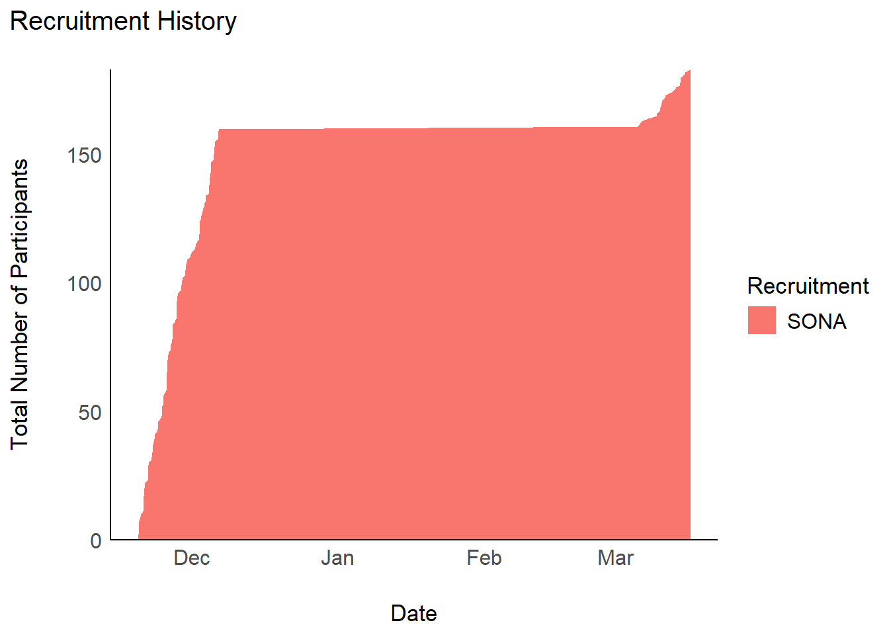
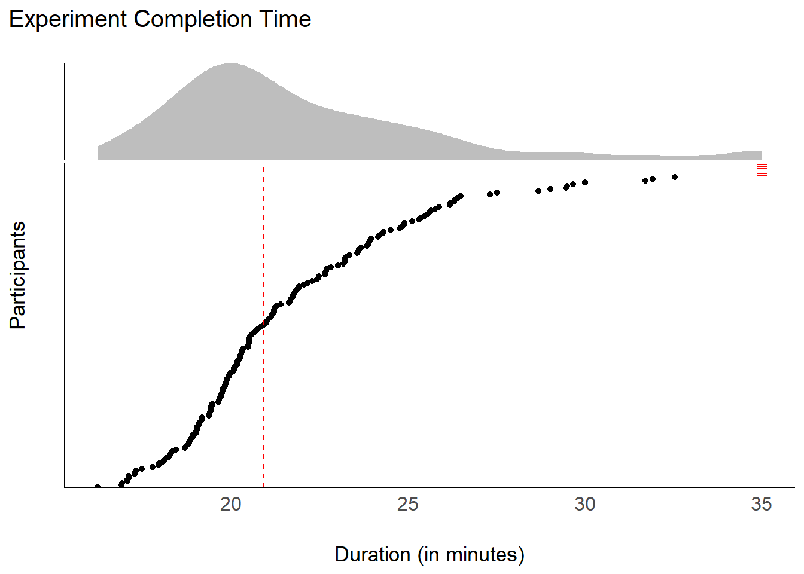
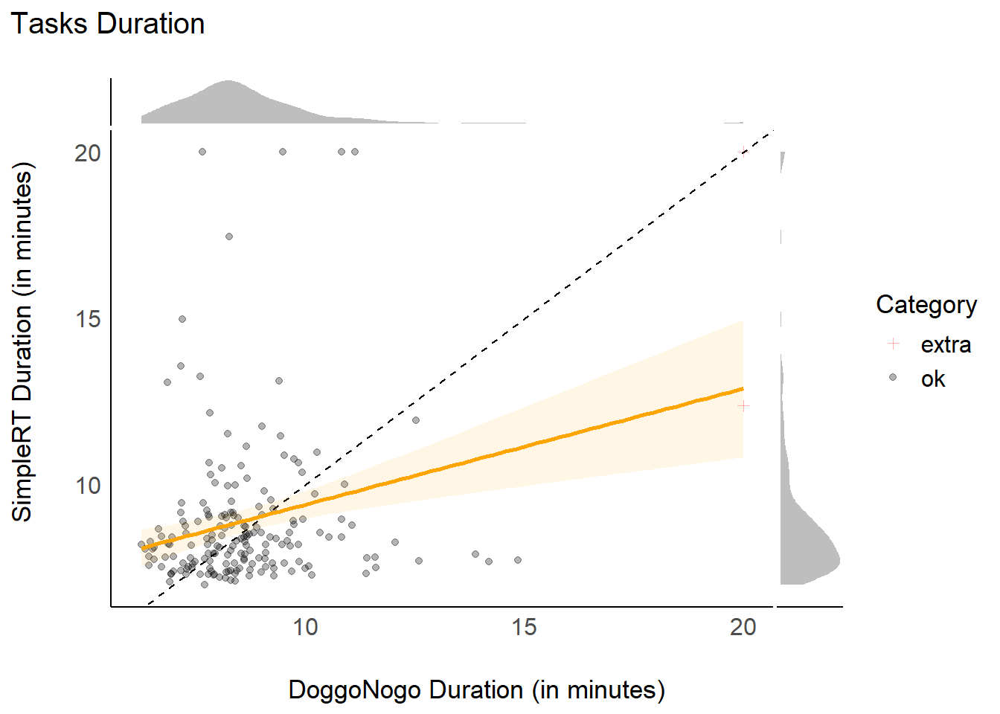
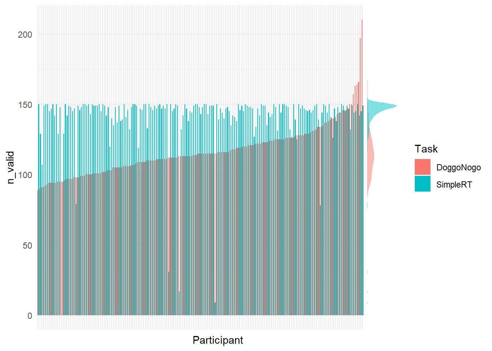
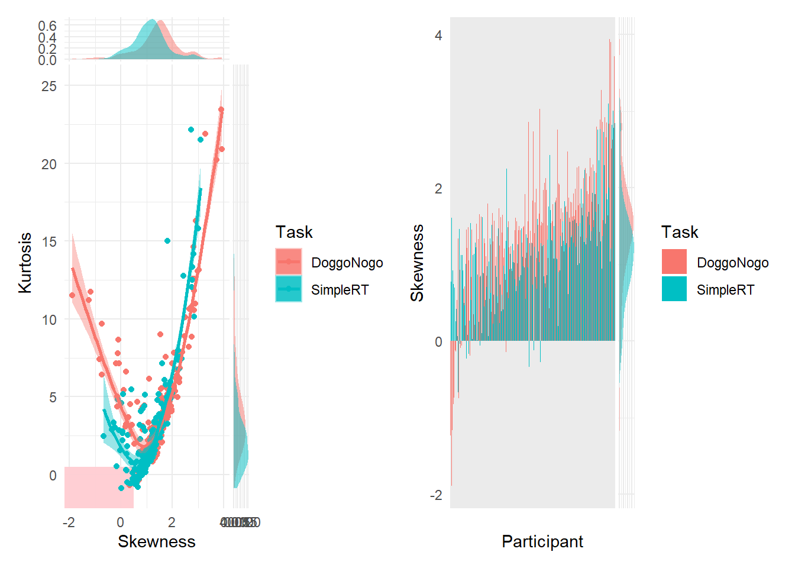
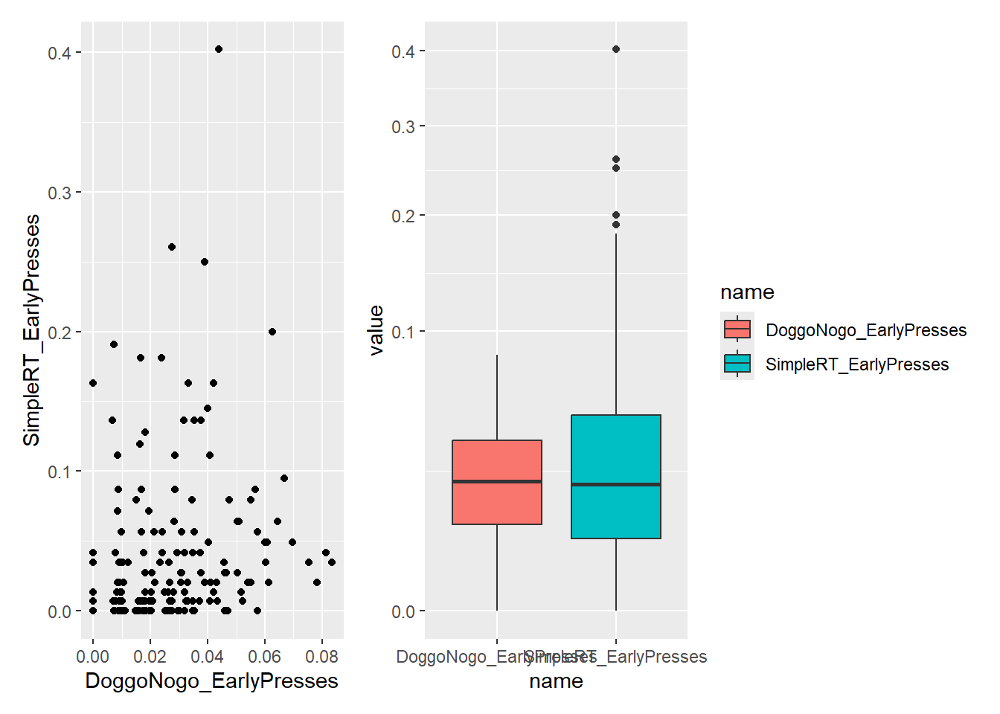
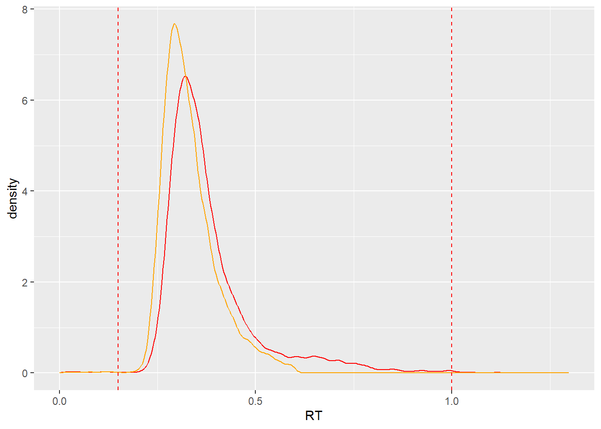
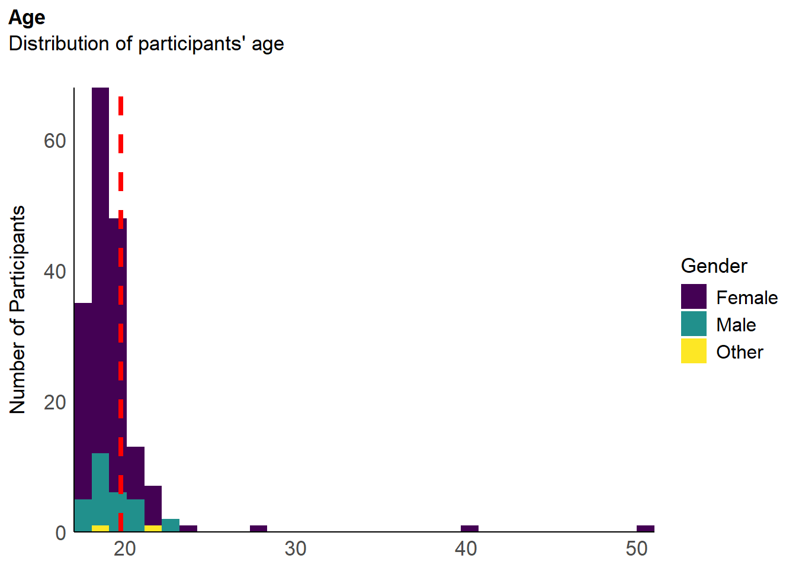
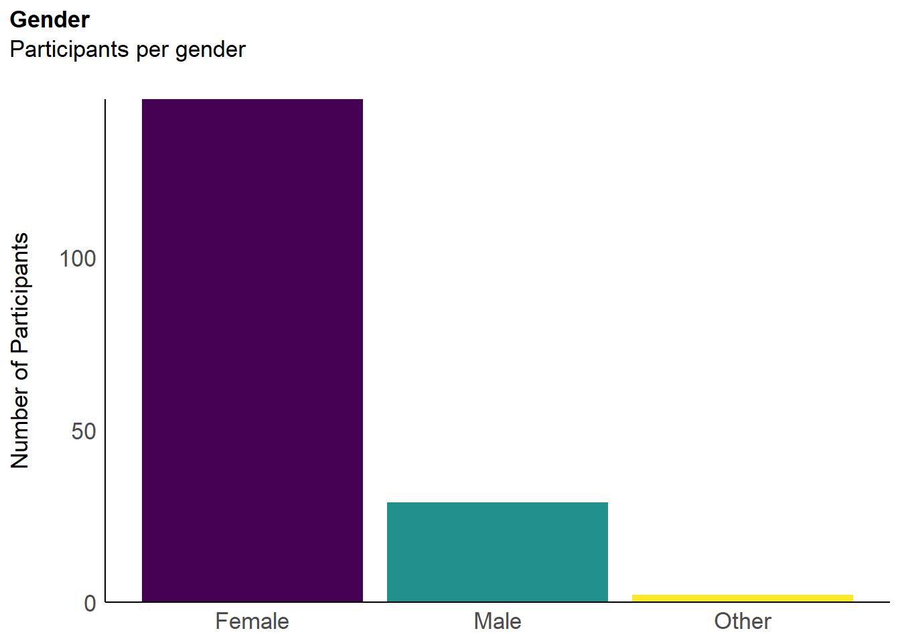

Code
library(tidyverse)
library(easystats)
library(patchwork)
library(ggside)
library(ggdist)library(tidyverse)
library(easystats)
library(patchwork)
library(ggside)
library(ggdist)df <- read.csv("../data/rawdata_participants.csv") |>
dplyr::mutate(across(c(Experiment_StartDate, DoggoNogo_Start, DoggoNogo_End, DoggoNogo_L1_Start, DoggoNogo_L1_End), as.POSIXct)) |>
dplyr::mutate(
DoggoNogo_Duration = as.numeric(DoggoNogo_End - DoggoNogo_Start),
SimpleRT_Duration = ((SimpleRT_end - SimpleRT_start) / 1000) / 60
)
df_simpleRT <- read.csv("../data/rawdata_simpleRT.csv")
df_doggo <- read.csv("../data/rawdata_doggonogo.csv")The initial sample of complete data consisted of 183 participants (Mean age = 19.9, SD = 3.9, range: [18, 53]; Gender: 83.1% women, 15.8% men, 1.09% non-binary; Education: Bachelor, 16.39%; Doctorate, 1.09%; High school, 80.33%; Master, 0.55%; Other, 1.64%), for a total trial number of 50380.
# Consecutive count of participants per day (as area)
df |>
mutate(Date = Experiment_StartDate) |>
group_by(Date, Recruitment) |>
summarize(N = n()) |>
ungroup() |>
complete(Date, Recruitment, fill = list(N = 0)) |>
group_by(Recruitment) |>
mutate(N = cumsum(N)) |>
ggplot(aes(x = Date, y = N)) +
geom_area(aes(fill=Recruitment)) +
scale_y_continuous(expand = c(0, 0)) +
labs(
title = "Recruitment History",
x = "Date",
y = "Total Number of Participants"
) +
see::theme_modern()
The experiment’s median duration is 20.91 min (50% HDI [18.70, 22.06]). The median duration of DoggoNogo was 8.37 min (50% HDI [7.62, 9.10]) and the median duration of the simple RT task was 8.24 min (50% HDI [7.24, 8.35]).
### Do outliers here matter that much? For overall time? Guessing more important might be duration of individual tasks?
df |>
mutate(Participant = fct_reorder(Participant, Experiment_Duration),
Category = ifelse(Experiment_Duration > 35, "extra", "ok"),
Duration = ifelse(Experiment_Duration > 35, 35, Experiment_Duration)) |>
ggplot(aes(y = Participant, x = Duration)) +
geom_point(aes(color = Category, shape = Category)) +
geom_vline(xintercept = median(df$Experiment_Duration), color = "red", linetype = "dashed") +
scale_shape_manual(values = c("extra" = 3, ok = 19)) +
scale_color_manual(values = c("extra" = "red", ok = "black")) +
guides(color = "none", shape = "none") +
ggside::geom_xsidedensity(fill = "grey", color=NA) +
ggside::scale_xsidey_continuous(expand = c(0, 0)) +
labs(
title = "Experiment Completion Time",
x = "Duration (in minutes)",
y = "Participants"
) +
see::theme_modern() +
ggside::theme_ggside_void() +
theme(ggside.panel.scale = .3,
axis.text.y = element_blank()) 
#TODO: potentially filter out extra slow as it biases the reg line
df |>
mutate(Participant = fct_reorder(Participant, DoggoNogo_Duration),
Category = ifelse(DoggoNogo_Duration > 20, "extra", "ok"),
DoggoNogo_Duration = ifelse(DoggoNogo_Duration > 20, 20, DoggoNogo_Duration),
SimpleRT_Duration = ifelse(SimpleRT_Duration > 20, 20, SimpleRT_Duration),
Category = ifelse(SimpleRT_Duration > 20, "extra", Category)) |>
ggplot(aes(x=DoggoNogo_Duration, y=SimpleRT_Duration)) +
geom_point(aes(color = Category, shape = Category), alpha = 0.3) +
geom_abline(intercept = 0, slope = 1, linetype = "dashed") +
geom_smooth(method = "lm", formula = 'y ~ x', color = "orange", fill="orange", alpha=0.1) +
scale_shape_manual(values = c("extra" = 3, ok = 19)) +
scale_color_manual(values = c("extra" = "red", ok = "black")) +
labs(
title = "Tasks Duration",
x = "DoggoNogo Duration (in minutes)",
y = "SimpleRT Duration (in minutes)"
) +
see::theme_modern() +
ggside::geom_xsidedensity(fill = "grey", color=NA) +
ggside::geom_ysidedensity(fill = "grey", color=NA) +
ggside::theme_ggside_void() 
data.frame(Feedback = df$Experiment_Feedback) |>
filter(!is.na(Feedback) & !Feedback %in% c("no", "N\\A")) |>
gt::gt() |>
gt::opt_interactive() exclusions <- list()data_nvalid <- rbind(
summarize(df_doggo, n_valid=max(Valid_Trial_Count), .by="Participant") |>
mutate(Task = "DoggoNogo") |>
mutate(Participant = fct_reorder(Participant, n_valid)),
summarize(df_simpleRT, n_valid=sum(!is.na(RT)), .by="Participant") |>
mutate(Task = "SimpleRT")
)
data_nvalid |>
ggplot(aes(x=Participant, y = n_valid, fill = Task)) +
geom_bar(position = "dodge", stat = "identity") +
theme_minimal() +
theme(axis.text.x = element_blank()) +
ggside::geom_ysidedensity(alpha=0.5, color=NA) +
ggside::theme_ggside_void() 
exclusions$n_valid <- as.character(filter(data_nvalid, Task=="SimpleRT" & data_nvalid$n_valid < 100)$Participant)We removed 6 (0.0327869) participants who missed more than one-third of trials in the simple RT task.
df <- filter(df, !Participant %in% exclusions$n_valid)
df_doggo <- filter(df_doggo, !Participant %in% exclusions$n_valid)
df_simpleRT <- filter(df_simpleRT, !Participant %in% exclusions$n_valid)data_rtdist <- rbind(
df_doggo |>
filter(Response_Type != "early" & Response_Type != "missed") |>
select(Participant, RT) |>
mutate(Task = "DoggoNogo"),
df_simpleRT |>
filter(!is.na(RT)) |>
select(Participant, RT) |>
mutate(Task = "SimpleRT"))
data_shape <- data_rtdist |>
summarize(Kurtosis = kurtosis(RT)$Kurtosis,
Skewness = skewness(RT)$Skewness,
.by=c("Participant", "Task")) |>
mutate(Outlier = ifelse(Skewness < 0.5 & Kurtosis < 0.5, "Outlier", "Normal"))
p_shape1 <- data_shape |>
mutate(Participant = fct_reorder(Participant, Skewness, .fun=mean)) |>
ggplot(aes(x=Participant, y = Skewness, fill = Task)) +
geom_bar(position = "dodge", stat = "identity") +
theme_minimal() +
theme(axis.text.x = element_blank()) +
ggside::geom_ysidedensity(alpha=0.5, color=NA)
p_shape2 <- data_shape |>
ggplot(aes(x=Skewness, y=Kurtosis)) +
geom_rect(ymin=-Inf, ymax=0.5, xmin=-Inf, xmax=0.5, alpha=0.2, fill="#FFCDD2") +
geom_point(aes(color=Task)) +
geom_smooth(aes(color=Task, fill=Task), method = "loess", formula = 'y ~ x') +
ggside::geom_ysidedensity(aes(fill=Task), alpha=0.5, color=NA) +
ggside::geom_xsidedensity(aes(fill=Task), alpha=0.5, color=NA) +
theme_minimal()
p_shape2 | p_shape1
# exclusions$shape <- unique(as.character(filter(data_shape, Outlier == "Outlier")$Participant))
exclusions$shape <- c()data_rtdist |>
merge(data_shape, by=c("Participant", "Task")) |>
ggplot(aes(x=RT, color=Outlier)) +
geom_density(aes(group=interaction(Participant, Task, Outlier)), alpha=0.3) +
theme_minimal() +
scale_color_manual(values = c("Normal" = "black", "Outlier" = "red")) +
facet_grid(Task~Outlier) +
theme_minimal() +
theme(axis.text.y = element_blank())We removed 0 (0) participants who had an outlying joint-score of skewness and kurtosis.
df <- filter(df, !Participant %in% exclusions$shape)
df_doggo <- filter(df_doggo, !Participant %in% exclusions$shape)
df_simpleRT <- filter(df_simpleRT, !Participant %in% exclusions$shape)df <- df_doggo |>
mutate(n_trials = max(Valid_Trial_Count), .by="Participant") |>
filter(Response_Type == "early") |>
summarise(DoggoNogo_EarlyPresses = n() / max(n_trials), .by=c("Participant")) |>
full_join(df, by = join_by(Participant)) |>
mutate(DoggoNogo_EarlyPresses = ifelse(is.na(DoggoNogo_EarlyPresses), 0, DoggoNogo_EarlyPresses))
df <- df_simpleRT |>
mutate(n_trials = sum(!is.na(RT)), .by="Participant") |>
filter(is.na(RT)) |>
summarise(SimpleRT_EarlyPresses = n() / max(n_trials), .by=c("Participant")) |>
full_join(df, by = join_by(Participant)) |>
mutate(SimpleRT_EarlyPresses = ifelse(is.na(SimpleRT_EarlyPresses), 0, SimpleRT_EarlyPresses))
df |>
ggplot(aes(x=DoggoNogo_EarlyPresses, y=SimpleRT_EarlyPresses)) +
geom_point() |
df |>
select(Participant, DoggoNogo_EarlyPresses, SimpleRT_EarlyPresses) |>
pivot_longer(-Participant) |>
ggplot(aes(x=name, y=value, fill=name)) +
geom_boxplot() +
scale_y_sqrt()
df_doggo <- filter(df_doggo, Response_Type != "early")
df_simpleRT <- filter(df_simpleRT, !is.na(RT))df_doggo |>
filter(RT < 2) |>
ggplot(aes(x=RT)) +
geom_density(color="red") +
geom_density(data=df_simpleRT, color="orange") +
geom_vline(xintercept=c(0.15, 1), linetype="dashed", color="red")
# Removal of trials faster than 150ms and slower than 1000ms (as pre-reg'd)
rt_exclusions <- list()
rt_exclusions$doggo <- df_doggo |>
dplyr::filter(RT < .15 | RT > 1)
rt_exclusions$simple <- df_simpleRT |>
dplyr::filter(RT < .15 | RT > 1)
df_doggo <- df_doggo |>
dplyr::filter(RT >= .15 & RT <= 1)
df_simpleRT <- df_simpleRT |>
dplyr::filter(RT >= .15 & RT <= 1)We removed 111 doggo/nogo trials and 59 simple RT trials in which participants responded faster than 150ms or slower than 1000ms.
The final sample includes 177 participants (Mean age = 19.8, SD = 3.1, range: [18, 51]; Gender: 82.5% women, 16.4% men, 1.13% non-binary; Education: Bachelor, 16.38%; Doctorate, 0.56%; High school, 80.79%; Master, 0.56%; Other, 1.69%).
estimate_density(df$Age) |>
normalize(select = y) |>
mutate(y = y * max(df$Age)-min(df$Age)) |> # To match the binwidth
ggplot(aes(x = x)) +
geom_histogram(data=df, aes(x = Age, fill=Gender), bins=max(df$Age)-min(df$Age)) +
geom_vline(xintercept = mean(df$Age), color = "red", linewidth=1.5, linetype="dashed") +
# scale_fill_manual(values = c("Male"= "#64B5F6", "Female"= "#F06292", "Other"="orange")) +
scale_fill_viridis_d() +
scale_x_continuous(expand = c(0, 0)) +
scale_y_continuous(expand = c(0, 0)) +
labs(title = "Age", y = "Number of Participants", color = NULL, subtitle = "Distribution of participants' age") +
theme_modern(axis.title.space = 10) +
theme(
plot.title = element_text(size = rel(1.2), face = "bold", hjust = 0),
plot.subtitle = element_text(size = rel(1.2), vjust = 7),
axis.text.y = element_text(size = rel(1.1)),
axis.text.x = element_text(size = rel(1.1)),
axis.title.x = element_blank()
)
make_barplot <- function(df, var="Gender") {
df |>
ggplot2::ggplot(aes(x = !!sym(var))) +
ggplot2::geom_bar(aes(fill = !!sym(var))) +
scale_y_continuous(expand = c(0, 0), breaks = scales::pretty_breaks()) +
scale_fill_viridis_d(guide = "none") +
labs(title = var, y = "Number of Participants", subtitle = ifelse(var == "Gender", "Participants per gender", "Participants per handedness")) +
theme_modern(axis.title.space = 15) +
theme(
plot.title = element_text(size = rel(1.2), face = "bold", hjust = 0),
plot.subtitle = element_text(size = rel(1.2), vjust = 7),
axis.text.y = element_text(size = rel(1.1)),
axis.text.x = element_text(size = rel(1.1)),
axis.title.x = element_blank())
}
make_barplot(df, var="Gender")
make_barplot(df, var="Handedness")df |>
mutate(
Student = ifelse(is.na(Student), FALSE, Student),
Education = fct_relevel(Education, "Other", "High school", "Bachelor", "Master", "Doctorate")) |>
ggplot2::ggplot(aes(x = Education)) +
ggplot2::geom_bar(aes(fill = Student)) +
theme_minimal()df |>
filter(!is.na(Discipline)) |>
ggplot(aes(x = "", fill = Discipline)) +
geom_bar() +
coord_polar("y") +
theme_minimal() +
theme(
axis.text.x = element_blank(),
axis.title.x = element_blank(),
axis.text.y = element_blank(),
axis.title.y = element_blank()
)df |>
filter(!is.na(Ethnicity)) |>
ggplot(aes(x = "", fill = Ethnicity)) +
geom_bar() +
coord_polar("y") +
theme_minimal() +
theme(
axis.text.x = element_blank(),
axis.title.x = element_blank(),
axis.text.y = element_blank(),
axis.title.y = element_blank()
)write.csv(df, "../data/data_participants.csv", row.names = FALSE)
write.csv(df_doggo, "../data/data_doggonogo.csv", row.names = FALSE)
write.csv(df_simpleRT, "../data/data_simpleRT.csv", row.names = FALSE)